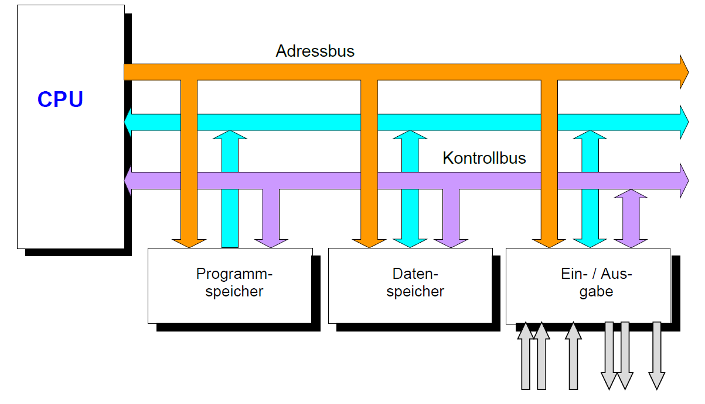
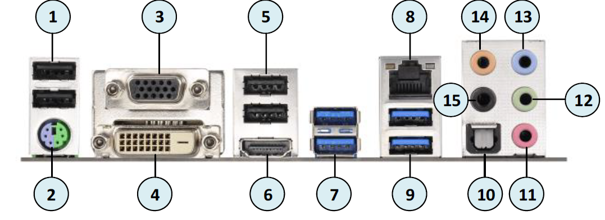

187 - ICT Arbeitsplatz und Betriebssystem in Betrieb nehmen
Microprozessor und CPU
Schnittstellen
Aufgaben Betriebssystem
Rechtliches zur Softwarenutzung
Ergonomie
Dateisystem
Hilfreiche Software
Installation OS
Handout
Die Hauptfunktion jedes Rechnersystems basiert auf dem EVA-Prinzip:
Eingabe -> Verarbeitung -> Ausgabe
Microprozessor und CPU
Sie bestehen aus komplexen Anforderungen an elektrische Schaltkreise. Es ist möglich auf einem Chip ein komplettes Steuer- und Rechenwerk aufzubauen. Der Kern des Mikroprozessor ist die CPU (Central Processing Unit). Um ein Rechner funktionstüchtig zu machen werden folgende Komponenten benötigt:
- RAM
- Festplatte (SSD und HDD)
- Grafikkarte
- Netzteil
- Mainboard
- Netzwerkkarte
- Kabel
Um zu kommunizieren sind Peripheriebausteine nötig, die Signale erfassen und ausgeben. Ein- und Ausgabeeinheiten.
Schnittstellen
| 1 | USB 2.0 Typ A |
| 2 | PS/2 (Maus und Tastatur) |
| 3 | BGA |
| 4 | DVI |
| 5 | USB 2.0 Typ A |
| 6 | HDMI |
| 7 | USB 3.0 Typ A |
| 8 | LAN RJ-45 |
| 9 | USB 3.0 Typ A |
| 10 | Optical Digital Audio Output |
| 11 | Mikrofon |
| 12 | Kopfhörer |
| 13 | AUX-IN |
| 14 | Center Subwoofer |
| 15 | Surround L/R |
Aufgaben Betriebssystem
Aufbau
Ein OS besitzt mehrere logische Schichten. Jede Schicht stellt "Dienste" zur Verfügung, d.h.
dass eine Schicht die Funktionen der nächstniedrigen Schicht aufrufen kann und der nächsthöheren
Schicht überstellen kann. Die Schnittstelle (BIOS / UEFI) kommuniziert direkt mit der Hardware.
Alle Schichten sind hardwareunabhängig.

Partitionierung
Um ein Betriebssystem sinnvoll zu verwalten und zu sichern, ist es vorteilhaft, dass die
Betriebssystemdateien von den Arbeitsdateien getrennt sind. Dies macht man mit der Partitionierung
der SDD oder Festplatte. Man kann auch mehrere Partitionierung auf einer Festplatte erstellen.
Die erste Partition auf dem Datenträger ist die Betriebssystempartition und anschliessend können
eine oder mehrere Datenpartitionen erstellt werden. Die OS-Partition muss primär und aktiv sein.
Rechtliches zur Softwarenutzung
Hier werden einige Begriffe kurz zusammengefasst unten ist eine ausführlichere Beschreibung vorhanden:

Software-Lizenz
Die Herstellung von einer Software erfordert hoher Sach- und Personalressourcen. Die Kosten die anfallen
werden später über den Verkaufspreis der Software gedeckt. Im Lieferumfang der Software ist eine
Lizenzierungsvereinbarung enthalten, die man akzeptieren muss um die Software vollständig nutzen zu können.
Inhalt dieser Vereinbarung ist unter anderem ein Kopierverbot. Wird Software auf einem Netzwerk-Server
bereitgehalten, dann muss meist jeden Benutzer, der auf die Software zugreift, eine weitere Lizenz erworben haben.
Raubkopien
Die teilweise hohen Preise für Software führen dazu, dass die Software einmal gekauft und anschliessend
unzulässigerweise kopiert und weitergegeben wird. Die Software-Industrie wiederum argumentiert, dass die
hohen Preise gerechtfertigt seien, um die Verluste durch Raubkopien zu ersetzen.
Shareware
Unter Shareware werden Programme verstanden, die über das Internet oder CDs aus Computerzeitschriften
verbreitet werden und in der Regel frei kopierbar sind. Mit der kostenlosen Weitergabe
dieser Software ist die Aufforderung verbunden, nach Ablauf einer Probezeit eine Lizenzgebühr
an den Autor der Software zu bezahlen. Die Probezeit kann dazu genutzt werden, das Programm
zu testen. Die Zahlungsmoral am Ende der Probezeit l¨sst in der Regel zu wünschen
übrig: Schätzungen gehen davon aus, dass nur 5 % bis 7 % der Nutzer der Zahlungsaufforderung
nachkommen.
Manche Autoren von Shareware verteilen deshalb eine Verion der Software, die
- nich die volle Funktionalität umfasst.
- in verschiedenen Hinweisfenstern oder auf Ausdrucken darauf hinweist, dass diese Verion noch ich nicht lizenziert ist.
- nach Ablauf der Probezeit nicht mehr startet.
Freeware
Freeware bezeichnet Programme, die kostenlos genutzt und weiterverteilt werden können. Solche Programme
finden ihre Verbreitung vornehmlich über das Internet oder über CDs, die regelmässig verschiedenen
Fachzeitschriften beiliegen.
Public Domain
Unter dem Begriff Public Domain werden Programme verstanden, die der Öffentlichkeit "gehören".
Diese Programme sind frei zugänglich, jederzeit kopier- und veränderbar und unterliegen keinen Urheberrechten.
Die Gefahr, bei der Verwendung von Free- und Shareware oder Public- Domain-Produkten Ihren Rechner mit Viren
zu infizieren, ist höher als bei Standard-Software, denn diese Produkte werden zum Teil genutzt, um Viren zu
verbreiten.
Ergonomie
Ergonomie bedeutet: Die Wissenschaft der optimalen Arbeitsbedingungen der Menschen, und auch Bedienung durch den Menschen.
Raumklima
Das Raumklima wird durch Werte wie Temperatur, relative Luftfeuchtigkeit und die Geschwindigkeit der
Luftbewegung bestimmt. Ein schlechtes Raumklima trägt zu Erkältungskrankheiten,
Bindehautentzündungen, trockenen Schleimhäuten, Allergien, Übelkeit, Schwindelgefühlen,
Konzentrationsstörungen und Ermüdungserscheinungen bei. Kriterien für ein gutes Raumklima sind:
- Raumtemperatur zwischen 20° und 26° Celsius
- Luftfeuchtigkeit zwischen 50 und 65%
- keine Zugluft
- keine Schadstoffe
- keine erhöhte Wärmebelästung durch Bürogeräte, zu öffnende Fenster mit Sonnenschutzvorrichtungen
Pflanzen im Büro
Pflanzen werden nicht nur von den meisten Menschen als schön empfunden. Sie sind auch in anderer Weise
effizient bei der Gestaltung des PC-Arbeitsplatzes, denn sie wirken beruhigend auf die Psyche,
erhöhen die Luftfeuchtigkeit und entgiften die Raumluft. Das gilt sowohl für den privaten Arbeitsbereich
als auch für Büros. Gerade grossblättrige Pflanzen verdunsten grosse Mengen Wasser und sind lebende
Filter für verschiedenste Luftschadstoffe. Pflanzen und spezielle Mikroorganismen können den Giftmix teilweise
entschärfen. Einige Pflanzen sind in der Lage bis zu vier Mikrogramm Formaldehyd pro Kilogramm Blattmasse
aufzunehmen und abzubauen.
Notwendig ist in jedem Fall, die Raumluft in leichter Bewegung zu halten. Stehende Luft senkt die Wirksamkeit pflanzlicher Filter auf bis zu einem Zehntel des eigentlichen Potenzials. Eine der wesentlichen Ursachen für Krankheiten, die während der Büroarbeit verursacht werden, ist trockene Raumluft. Insbesondere im Winter, wenn die Infektionsgefahr durch andere Ursachen erhöht ist, wirken sich Heizung oder Klimaanlagen zusätzlich negativ aus. Wichtig ist dann die regelmässige Lüftung bei weit geöffnetem Fenster. Das sorgt für Frischluftzufuhr und vermindert elektrostatische Aufladung.

Lärm
Beleuchtung
Dateisystem
Allgemein
Hilfreiche Software
Task-Manager
Geräte-Manager
Computerverwaltung
Dateiträgerbereinigung
Systeminformationen
PowerShell
Ausführen
cmd
Installation OS
Vorbereitung
Nachbereitung